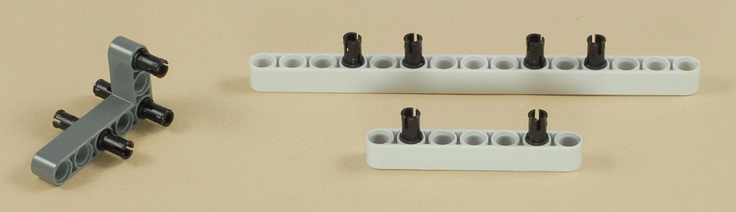
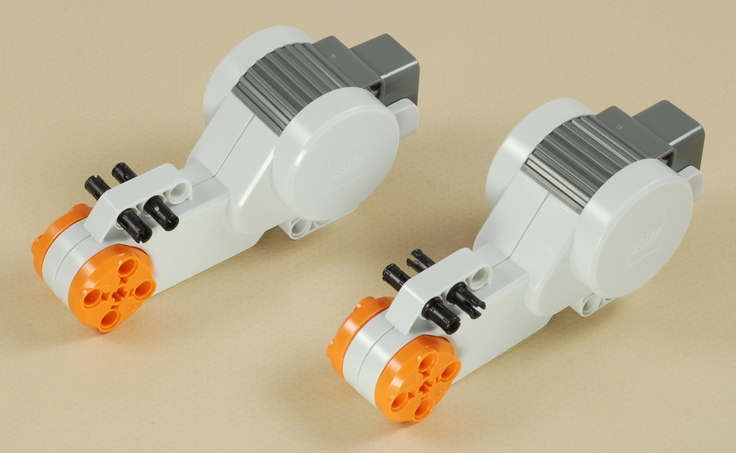
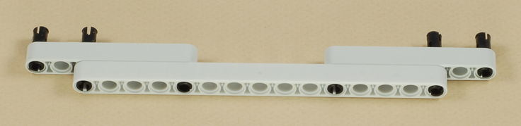
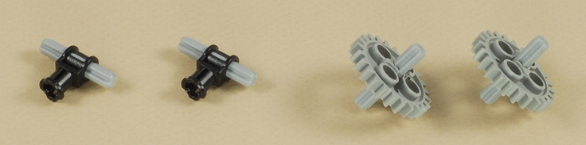

Fun Projects for your LEGO� MINDSTORMS� NXT!
|
|
Fun Projects for your LEGO� MINDSTORMS� NXT! |
| Spinner Bot |
|

1
| Note that the USB port is on the back side of the NXT brick here. |
2

| Note that the USB port is on the back side of the NXT brick here. |
3

4

5
6
7
8

9
10
11
| Important: Make sure that all the bushings are gears are not pushed too tightly onto the axles. The axles and gears should be able to spin freely. |

12
13

14
15
16


17


| Make sure that the axles are centered on the wheels as shown below. |


18
19
| Use two medium length wires to connect the motors to ports B and C on the NXT as shown below. |
|
Spinner Bot Programming The Stall_Turn program demonstrates one interesting thing that you can do with the Spinner Bot. Because so much of the robot's weight is over the drive wheels, and the wheels are "geared up" for speed, when the robot collides with something and gets stuck, the motors will tend to stall (or partially stall) rather than the tires slipping. The program takes advantage of this to detect when the robot has run into something by monitoring the rotation sensors in the motors to look for a stall or partial stall that indicates a collision. When a stall is detected, the program makes the robot back up a little then turn in a different direction before continuing. This is similar to the motion of the Bumper Car robot but without the need for a touch sensor and bumper. And to make it a little more interesting, the program randomly decides whether to turn left or right after a collision, and the turns do a complete spin first, to show off the Spinner Bot's spinning ability. |
Challenges
|
|
Copyright
�
2007-2009 by Dave Parker. All rights reserved. |